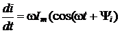
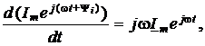
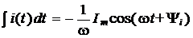
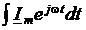
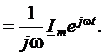

Запишем комплексные функции:
• гармонического тока
i(t = Imsin(ωt + Ψi) I(jω) = Ime,
• его производной
 
(2.26)
• и интеграла по времени
  (2.27)
Из (2.26) следует, что производная комплексной функции тока равна комплексу тока, умноженному на jω. Так как j = еjπ/2,
то операция дифференцирования комплекса функции тока приводит к увеличению его модуля в ω раз и повороту вектора в комплексной плоскости на угол π/2 в положительном направлении. Операция интегрирования комплекса тока (2.27) соответствует его делению на ω и повороту вектора в комплексной плоскости по ходу часовой стрелки на угол π/2.
Соотношения (2.26) и (2.27) будут использованы при выводе компонентных уравнений пассивных элементов электрических цепей и при построении векторных диаграмм напряжений и токов в комплексной плоскости.